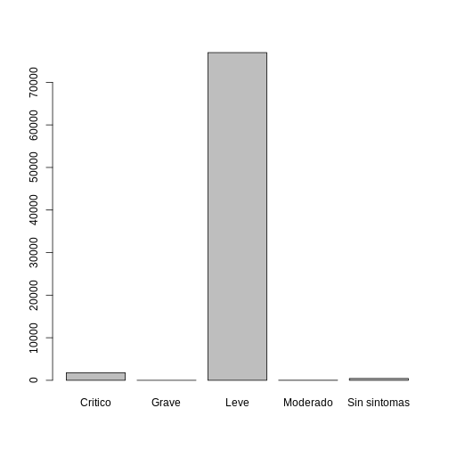

Limpieza de datos epidemiológicos
Última actualización: 2025-04-22 | Mejora esta página
Tiempo estimado: 44 minutos
Hoja de ruta
Preguntas
- ¿Cómo limpiar datos epidemiológicos con R?
Objetivos
Al final de este taller usted podrá:
Reconocer las herramientas que facilitan la limpieza de datos epidemiológicos.
Identificar las buenas prácticas de la limpieza de datos epidemiológicos.
Explorar el proceso de limpieza, organización y caracterización de datos epidemiológicos.
Pre requisito
Esta unidad tiene como prerequisitos:
- Introducción a R y RStudio
Tabla de contenido
- Módulo: Ciencia de datos en salud pública
- Unidad: Limpieza de datos epidemiológicos
- Tema 1: Introducción a la limpieza de datos (Ver en plataforma del curso)
- Tema 2: Exploración y caracterización de los datos
- Tema 3: Modificación, limpieza y corrección de los datos: Errores frecuentes y sus soluciones
- Tema 4: Organización de los datos
- Unidad: Limpieza de datos epidemiológicos
Introducción
En esta unidad abordaremos el proceso de limpieza de datos epidemiológicos, utilizando los conocimientos previos de la unidad de la introducción a R y RStudio, abordaremos la limpieza de datos como un proceso fundamental para obtener insumos idóneos para el análisis de los datos, la visualización y la creación de reportes epidemiológicos.
En esta unidad, aprenderá a reconocer las actividades necesarias para llevar a cabo el proceso de limpieza de datos, aprenderá cómo solucionar los errores más comunes en las bases de datos que pueden afectar el análisis y comprenderá cómo describir y organizar los datos, clasificar variables, aplicar formatos a las variables, manejar datos duplicados y abordar la ausencia de datos.
Tema 2: Exploración y caracterización de los datos
2.2. Exploración de la estructura de los datos en R
Una vez hecha la exploración y la caracterización de los datos mediante la documentación se procederá a explorar el dataset.
2.2.1. Carga de la información
⚠️ Instrucciones:
Antes de empezar a trabajar verifique que ya cuenta con los siguientes pasos:
Cree un proyecto en R
Cree carpeta llamada “datos” dentro del proyecto
Descargue el archivo data_limpieza.zip que contiene el dataset “covid_LA.csv” y el documento de información “covid_LA_info.txt”, disponible en el siguiente enlace https://github.com/TRACE-LAC/TRACE-LAC-data/raw/main/data_limpieza.zip
Descomprima los archivos y guarde el dataset “covid_LA.csv” en la carpeta “datos”
Cree un R script
Aviso
Si tiene dudas con el proceso por favor regrese a la unidad de Introducción a R.
Resultado esperado: Hasta este punto, el proyecto se debería ver así:

- Cargue las librerías: tidyverse, rio y cleanepi.
Aviso
Si aún no las ha instalado puede hacerlo con el siguiente código
R
if(!require("tidyverse")) install.packages("tidyverse") #si necesita instalar tidyverse
if(!require("cleanepi")) install.packages("cleanepi") #si necesita instalar cleanepi
if(!require("rio")) install.packages("rio") #si necesita instalar rio
R
library("tidyverse")
library("cleanepi")
library("rio")
Resultado esperado: Al usar el anterior código con el mismo dataset se obtiene el siguiente resultado:
SALIDA
── Attaching core tidyverse packages ──────────────────────── tidyverse 2.0.0 ──
✔ dplyr 1.1.4 ✔ readr 2.1.5
✔ forcats 1.0.0 ✔ stringr 1.5.1
✔ ggplot2 3.5.1 ✔ tibble 3.2.1
✔ lubridate 1.9.4 ✔ tidyr 1.3.1
✔ purrr 1.0.4
── Conflicts ────────────────────────────────────────── tidyverse_conflicts() ──
✖ dplyr::filter() masks stats::filter()
✖ dplyr::lag() masks stats::lag()
ℹ Use the conflicted package (<http://conflicted.r-lib.org/>) to force all conflicts to become errors- Cargue el dataset
⚠️ Instrucción: Cargue el dataset en R con el siguiente código:
R
covid <- rio::import("datos/covid_LA.csv")
Ahora que la base está cargada podemos hacer la revisión del formato de los datos.
2.2.2. Exploración del dataset
En este ejercicio para explorar las variables contenidas en el objeto covid se puede realizar una aproximación general o específica a cada variable.
Por ejemplo, puede hacer una aproximación general usando la función str para identificar el tipo de objeto, tipo de variables y valores de la variable. Una opción dentro de tidyverse la función glimpse que permite identificar rápidamente el contenido del dataset.
⚠️ Instrucción: Emplee la función
glimpse o str
R
covid %>%
dplyr::glimpse()
Resultado esperado : Al usar el anterior código con el mismo dataset se obtiene el siguiente resultado:
SALIDA
Rows: 79,200
Columns: 25
$ `fecha reporte web` <chr> "2021-03-15", "21-03-23", "2021-mar-15",…
$ `ID de caso` <int> 1804713, 3202309, 5651419, 59067, 523826…
$ `Fecha de notificación` <chr> "31/12/2020", "26/04/2021", "08/01/2022"…
$ Edad <int> 26, 28, 61, 24, 51, 25, 35, 56, 27, 8, 3…
$ Sexo <chr> "M", "F", "M", "M", "M", "M", "M", "M", …
$ `Ubicación del caso` <chr> "Casa", "Casa", "Casa", "Casa", "Casa", …
$ Estado <chr> "Leve", "Leve", "Leve", "Leve", "Leve", …
$ Recuperado <chr> "Recuperado", "Recuperado", "Recuperado"…
$ `Fecha de inicio de síntomas` <chr> "21/12/2020", "24/04/2021", "04/01/2022"…
$ `Fecha de muerte` <chr> "No registra", "No registra", "No regist…
$ `Fecha de diagnóstico` <chr> "02/01/2021", "06/05/2021", "19/01/2022"…
$ `Fecha de recuperación` <chr> "13/01/2021", "23/05/2021", "21/01/2022"…
$ `Tipo de recuperación` <chr> "Tiempo", "Tiempo", "Tiempo", "Tiempo", …
$ `fecha de nacimiento` <dbl> 1996, 1994, 1961, 1998, 1971, 1997, 1987…
$ `Nombre del país` <chr> "Argentina", "Haití", "Perú", "Ecuador",…
$ Sintomas <chr> "Leve", "Leve", "Leve", "Leve", "Leve", …
$ `Edad repetida` <int> 26, 28, 61, 24, 51, 25, 35, 56, 27, 8, 3…
$ Num_Hos_Rec <chr> "cero", "0", "0", "0", "0", "cero", "cer…
$ `Tensión arterial` <chr> "102/85", "148/72", "92/84", "122/71", "…
$ `año última actualización` <int> 2024, 2024, 2024, 2024, 2024, 2024, 2024…
$ `método recolección` <chr> "Llamada telefónica", "Llamada telefónic…
$ `Central de reporte` <lgl> NA, NA, NA, NA, NA, NA, NA, NA, NA, NA, …
$ Vacunado <lgl> FALSE, TRUE, FALSE, TRUE, TRUE, TRUE, TR…
$ talla <chr> "1.73", "1.67", "1m69", "1.66", "1.63", …
$ peso <dbl> 69.6, 73.9, 66.4, 72.5, 64.6, 66.7, 68.9…2.2.3. Aplicación de buenas prácticas para nombrar variables
Aviso
Tip de buena práctica: De acuerdo con las buenas prácticas de programación se recomienda que los nombres de las variables tengan características como:
Estar en minúsculas
No contener caracteres especiales
No contener espacios
Estas recomendaciones dependen de la preferencia del analista y su
equipo. Para este módulo vamos a hacer uso de la función
standardize_column_names del paquete
cleanepi.
Aviso
La función standardize_column_names tiene como argumento
principal:
-
data: el dataset (o linelist) con los datos a modificar.
Y dos argumentos opcionales:
keep: un vector con los nombres de las columnas que se mantendrán.rename: un vector con los nombres de las columnas que se renombraran. Ej.c(nombre_nuevo1 = “nombre_viejo1”, nombre_nuevo2 = “nombre_viejo2”)
⚠️ Instrucción: Emplee la función standardize_column_names para limpiar los nombres del dataset covid:
R
covid <- covid %>%
cleanepi::standardize_column_names()
Resultado esperado: El código anterior no arroja un resultado visible en la consola para observar el cambio, sin embargo, empleando la función glimpse podemos observar los nombres de las variables de la base covid ajustados.
⚠️ Instrucción: Emplee la función glimpse y observe el cambio en el nombre de la variable Tipo de recuperación:
R
covid %>%
dplyr::glimpse()
Resultado esperado: Al usar el anterior código con el mismo dataset se obtiene el siguiente resultado:
SALIDA
Rows: 79,200
Columns: 25
$ fecha_reporte_web <chr> "2021-03-15", "21-03-23", "2021-mar-15", "…
$ id_de_caso <int> 1804713, 3202309, 5651419, 59067, 5238264,…
$ fecha_de_notificacion <chr> "31/12/2020", "26/04/2021", "08/01/2022", …
$ edad <int> 26, 28, 61, 24, 51, 25, 35, 56, 27, 8, 35,…
$ sexo <chr> "M", "F", "M", "M", "M", "M", "M", "M", "F…
$ ubicacion_del_caso <chr> "Casa", "Casa", "Casa", "Casa", "Casa", "F…
$ estado <chr> "Leve", "Leve", "Leve", "Leve", "Leve", "F…
$ recuperado <chr> "Recuperado", "Recuperado", "Recuperado", …
$ fecha_de_inicio_de_sintomas <chr> "21/12/2020", "24/04/2021", "04/01/2022", …
$ fecha_de_muerte <chr> "No registra", "No registra", "No registra…
$ fecha_de_diagnostico <chr> "02/01/2021", "06/05/2021", "19/01/2022", …
$ fecha_de_recuperacion <chr> "13/01/2021", "23/05/2021", "21/01/2022", …
$ tipo_de_recuperacion <chr> "Tiempo", "Tiempo", "Tiempo", "Tiempo", "T…
$ fecha_de_nacimiento <dbl> 1996, 1994, 1961, 1998, 1971, 1997, 1987, …
$ nombre_del_pais <chr> "Argentina", "Haití", "Perú", "Ecuador", "…
$ sintomas <chr> "Leve", "Leve", "Leve", "Leve", "Leve", "C…
$ edad_repetida <int> 26, 28, 61, 24, 51, 25, 35, 56, 27, 8, 35,…
$ num_hos_rec <chr> "cero", "0", "0", "0", "0", "cero", "cero"…
$ tension_arterial <chr> "102/85", "148/72", "92/84", "122/71", "15…
$ ano_ultima_actualizacion <int> 2024, 2024, 2024, 2024, 2024, 2024, 2024, …
$ metodo_recoleccion <chr> "Llamada telefónica", "Llamada telefónica"…
$ central_de_reporte <lgl> NA, NA, NA, NA, NA, NA, NA, NA, NA, NA, NA…
$ vacunado <lgl> FALSE, TRUE, FALSE, TRUE, TRUE, TRUE, TRUE…
$ talla <chr> "1.73", "1.67", "1m69", "1.66", "1.63", "1…
$ peso <dbl> 69.6, 73.9, 66.4, 72.5, 64.6, 66.7, 68.9, …2.2.4. Resumen de variables
Para empezar la exploración de las variables, emplearemos la función summary.
⚠️️ Instrucción: Emplee la función summary para explorar las variables:
R
covid %>%
base::summary()
Resultado esperado: Al usar el anterior código con el mismo dataset se obtiene el siguiente resultado:
SALIDA
fecha_reporte_web id_de_caso fecha_de_notificacion edad
Length:79200 Min. : 150 Length:79200 Min. : 1.00
Class :character 1st Qu.:1555387 Class :character 1st Qu.: 27.00
Mode :character Median :3134996 Mode :character Median : 38.00
Mean :3128082 Mean : 39.84
3rd Qu.:4691283 3rd Qu.: 52.00
Max. :6265661 Max. :109.00
sexo ubicacion_del_caso estado recuperado
Length:79200 Length:79200 Length:79200 Length:79200
Class :character Class :character Class :character Class :character
Mode :character Mode :character Mode :character Mode :character
fecha_de_inicio_de_sintomas fecha_de_muerte fecha_de_diagnostico
Length:79200 Length:79200 Length:79200
Class :character Class :character Class :character
Mode :character Mode :character Mode :character
fecha_de_recuperacion tipo_de_recuperacion fecha_de_nacimiento
Length:79200 Length:79200 Min. :1913
Class :character Class :character 1st Qu.:1970
Mode :character Mode :character Median :1984
Mean : Inf
3rd Qu.:1995
Max. : Inf
NA's :1393
nombre_del_pais sintomas edad_repetida num_hos_rec
Length:79200 Length:79200 Min. : 1.00 Length:79200
Class :character Class :character 1st Qu.: 27.00 Class :character
Mode :character Mode :character Median : 38.00 Mode :character
Mean : 39.84
3rd Qu.: 52.00
Max. :109.00
tension_arterial ano_ultima_actualizacion metodo_recoleccion
Length:79200 Min. :2024 Length:79200
Class :character 1st Qu.:2024 Class :character
Mode :character Median :2024 Mode :character
Mean :2024
3rd Qu.:2024
Max. :2024
central_de_reporte vacunado talla peso
Mode:logical Mode :logical Length:79200 Min. :53.60
NA's:79200 FALSE:19186 Class :character 1st Qu.:67.30
TRUE :60014 Mode :character Median :70.00
Mean :69.99
3rd Qu.:72.70
Max. :87.10
Aviso
Para conocer las unidades de las variables recuerde ver la documentación llamada “covid_LA_info.txt”.
Además de poder usar summary como en el caso anterior,
también se puede obtener esta información para cada variable de forma
individual. Por ejemplo, para la variable edad, empleamos
summary llamando a la variable dentro del dataset.
⚠️️ Instrucción: Emplee la función summary para explorar la variable edad:
R
covid %>%
dplyr::select(edad) %>%
base::summary()
Resultado esperado: Al usar el anterior código con el mismo dataset se obtiene el siguiente resultado:
SALIDA
edad
Min. : 1.00
1st Qu.: 27.00
Median : 38.00
Mean : 39.84
3rd Qu.: 52.00
Max. :109.00 2.2.5. Exploración de variables cuantitativas
Otra forma de explorar variables cuantitativas es en forma de gráfica. Empleando gráficos como histogramas, diagrama de cajas y bigotes, líneas de tendencia, nubes de puntos, diagrama de violines, entre otros. A continuación, se muestran ejemplos para histograma y diagrama de cajas y bigotes.
⚠️ Instrucción: Emplee la función hist para generar
un histograma de la variable edad:
R
covid %>%
dplyr::pull(edad) %>% #pull extrae el vector
graphics::hist()
Resultado esperado: Al usar el anterior código con el mismo dataset se obtiene el siguiente resultado:
⚠️ Instrucción: Emplee la función boxplot para
generar un boxplot de la variable edad:
R
covid %>%
dplyr::pull(edad) %>%
graphics::boxplot()
Resultado esperado: Al usar el anterior código con el mismo dataset se obtiene el siguiente resultado:
Estos gráficos pueden resultar útiles para examinar la tendencia y distribución de los datos, así como observar datos atípicos.
Aviso
Para explorar más temas de visualización por favor diríjase a la Unidad. Introducción a la visualización de datos en R con ggplot2.
2.2.6. Exploración de variables cualitativas
Ahondemos un poco más en la exploración de variables cualitativas.
Cuando usamos summary, al inicio de esta sección, pudimos
ver que sucedía con algunas variables cualitativas. Ahora observaremos
lo que pasa con la variable nombre_del_pais.
⚠️ Instrucción: Seleccione la variable nombre_del_pais empleando la función select y emplee la función summary para ver el resumen de esta variable.
R
covid %>%
dplyr::select(sintomas) %>%
base::summary()
Resultado esperado: Al usar el anterior código con el mismo dataset se obtiene el siguiente resultado:
SALIDA
sintomas
Length:79200
Class :character
Mode :character ¿Qué puede observar?
Para obtener detalles sobre las categorías de las variables, podemos usar otras opciones como tablas, tablas de proporciones, extracción de valores únicos y creación de gráficos. Veamos cada uno:
⚠️ Instrucción: Emplee la función table para generar una tabla de la variable sintomas :
R
covid %>%
dplyr::pull(sintomas) %>%
base::table()
Resultado esperado: Al usar el anterior código con el mismo dataset debió obtener los siguientes resultados:
SALIDA
.
Critico Grave Leve Moderado Sin sintomas
1781 1 76976 13 429 ¿Qué puede observar?
En caso que deseemos observar una tabla con los
porcentajes de cada elemento al interior de la variable
podemos recurrir a la función prop.table.
⚠️ Instrucción: Emplee la función
prop.table para generar una tabla con porcentajes de la
variable sintomas:
R
covid %>%
dplyr::pull(sintomas) %>%
base::table() %>%
base::prop.table()*100 #si desea las propociones puede eliminar el "*100"
Resultado esperado: Al usar el anterior código con el mismo dataset se obtiene el siguiente resultado:
SALIDA
.
Critico Grave Leve Moderado Sin sintomas
2.248737374 0.001262626 97.191919192 0.016414141 0.541666667 Como puede observar ahora podemos ver cada categoría con su
respectivo porcentaje. En caso de que sólo deseemos ver los objetos
contenidos sin otros datos podemos emplear la función
unique.
⚠️ Instrucción: Emplee la función unique para extraer los valores únicos de la variable sintomas:
R
covid %>%
dplyr::pull(sintomas) %>%
base::unique()
Resultado esperado: Al usar el anterior código con el mismo dataset se obtiene el siguiente resultado:
SALIDA
[1] "Leve" "Critico" "Moderado" "Sin sintomas" "Grave" Con esto pudimos obtener los diferentes valores de la variable
sintomas. Además, las variables cualitativas pueden ser
examinadas mediante gráficos de barras o de torta.
⚠️ Instrucción: Emplee la función barplot a
compañado de la función tablepara generar un gráfico de barras del
contenido de la variable sexo:
R
covid %>%
dplyr::pull(sintomas) %>%
base::table() %>%
graphics::barplot()
Resultado esperado: Al usar el anterior código con el mismo dataset se obtiene el siguiente resultado:

Tema 3: Modificación, limpieza y corrección de los datos: Errores frecuentes y sus soluciones
3.1. Revisión de la coherencia del contenido de las variables.
Para emplear estas funciones de conversión podemos emplearlas
directamente a cada variable (ej. as.factor(covid$sexo)) o
hacer uso de la función across. La función
across es una función del paquete dplyr que
permite aplicar transformaciones a múltiples variables de un data frame
de manera simultánea.
Aviso
La función across tiene dos argumentos
.cols: el vector de variables a transformar..fns: la función que se aplicará.
⚠️ Instrucción: Convierta las variables
sexo, sintomas y nombre_del_pais
a tipo factor con las funciones across y
as.factor.
R
covid <- covid %>%
dplyr::mutate(
dplyr::across(
.cols = c("sexo", "sintomas", "nombre_del_pais"),
.fns = as.factor))
Resultado esperado: Se puede observar el resultado del código anterior empleando funciones de visualización como summary.
⚠️ Instrucción: Emplee la función summary para explorar las variables transformadas a tipo factor:
R
covid %>%
dplyr::select(c(sexo, sintomas, nombre_del_pais)) %>%
base::summary()
Resultado esperado: Al usar el anterior código con el mismo dataset se obtiene el siguiente resultado:
SALIDA
sexo sintomas nombre_del_pais
F:42336 Critico : 1781 Honduras : 3730
M:36864 Grave : 1 Ecuador : 3715
Leve :76976 Nicaragua : 3690
Moderado : 13 Brasil : 3665
Sin sintomas: 429 Bolivia : 3661
Costa Rica: 3658
(Other) :57081 Al utilizar la función summary con las variables que acabamos de convertir en tipo factor, podemos observar que a diferencia de la primera vez que usamos summary en el paso 4 del tema 2 los resultados han cambiado.
Discusión
¿Qué cambios puede observar?
Para dar un orden a las categorías de una variable factor podemos
usar la función fct_relevel.
⚠️ Instrucción: Emplee la función
fct_relevel para modificar el orden de las categorías de la
variable:
Aviso
Pista: En el primer argumento llamamos la variable a modificar y en el segundo argumento ponemos un vector con los niveles en el orden deseado.
R
covid <- covid %>%
dplyr::mutate(sintomas =
forcats::fct_relevel(sintomas,
"Sin sintomas",
"Leve", "Moderado",
"Grave", "Critico"))
⚠️ Instrucción: Verifique si los niveles de la variable están en el orden deseado:
R
covid %>%
dplyr::count(sintomas)
Resultado esperado: Al usar el anterior código con el mismo dataset se obtiene el siguiente resultado:
SALIDA
sintomas n
1 Sin sintomas 429
2 Leve 76976
3 Moderado 13
4 Grave 1
5 Critico 1781Tener en orden los niveles de las variables es fundamental para un adecuado análisis estadístico y una correcta interpretación de los resultados.
Sin embargo, aunque la documentación especifique que la variable debe
tener un tipo de dato determinado. Por ejemplo, para variables
numéricas, a veces un dataset podría contener los números escritos en
letras. En este caso, al realizar la conversión a tipo numérico el
sistema no los detectará como valores numéricos y los reemplazará por
valores NA, lo que resultará en la pérdida de esa
información. Veamos un ejemplo.
⚠️ Instrucciones:
- Usando la función table explore los primeros 1000 registros
contenidos de la variable
num_hos_rec¿Qué elementos puede observar?
R
covid %>%
dplyr::slice(1:1000) %>%
dplyr::pull(num_hos_rec) %>%
base::table(useNA = "always")
Resultado esperado: Al usar el anterior código con el mismo dataset se obtiene el siguiente resultado:
SALIDA
.
0 1 2 3 cero dos
545 18 22 19 180 26
no registra No registra tres uno <NA>
81 72 22 15 0 Esta variable contiene elementos numéricos, caracteres y
NA para convertir la variable a numérica se emplea la
función as.numeric.
- Antes de convertir el dataset, usando la función
as.numericobtenga una tabla de la columna en formato numérico que le permita explorar las consecuencias de convertirla a numérica.
R
covid %>%
dplyr::slice(1:1000) %>%
dplyr::pull(num_hos_rec) %>%
base::as.numeric() %>%
base::table(useNA = "always")
Resultado esperado: Al usar el anterior código con el mismo dataset se obtiene el siguiente resultado:
ADVERTENCIA
Warning in base::table(., useNA = "always"): NAs introduced by coercionSALIDA
.
0 1 2 3 <NA>
545 18 22 19 396 ¿Qué cambios pudo observar?
Al explorar la variable en formato numérico notamos que los números
permanecen mientras que los elementos no numéricos (“no registra” y “No
registra”) se unieron al grupo de NA. Más adelante
profundizaremos en los datos NA. Si esta conforme con los
cambios, puede convertir el dataset:
R
covid <- covid %>%
cleanepi::convert_to_numeric(
target_columns = "num_hos_rec",
lang = "es")
3.2. Identificación de valores erróneos o faltantes.
Además de los valores NA en nuestro procesamiento de datos podemos encontrar otros valores Inf (valores infinitos) o NaN (valores numéricos indeterminados).
La identificación de datos faltantes requiere en primera instancia identificar la causa de la ausencia de estos datos.
3.2.1. Valores NA
NAs relacionados con separadores incorrectos
Veamos un ejemplo común de aparición de NA: cuando
tenemos diferentes separadores para números (ej. en talla).
⚠️ Instrucción: Antes de convertir el dataset,
obtenga una tabla (usando la función table) que cuantifique los NA
resultantes de convertir la variable talla en formato numérico con la
función as.numeric. Para comprobar si un valor es NA puede
usar la función is.na.
R
covid %>%
dplyr::pull(talla) %>%
base::as.numeric() %>%
base::is.na() %>%
base::table()
ADVERTENCIA
Warning in base::table(.): NAs introduced by coercionSALIDA
.
FALSE TRUE
54068 25132 Ahora use el siguiente código para comprender por qué se generan
estos NA
R
covid %>%
dplyr::pull(talla) %>%
utils::head()
SALIDA
[1] "1.73" "1.67" "1m69" "1.66" "1.63" "1 68"Resultado esperado: Como puede observar aparece una
advertencia indicando que algunos de los valores han sido convertidos en
valores NA. Esto se debe a que hay elementos no numéricos
en la variable. Al explorar el contenido de la variable podemos notar
que la talla está como un vector de caracteres y los separadores
incluyen puntos, comas, espacios, etc, pero en este caso es un sólo
separador en todos los casos.
Cuando trabajamos con una variable numérica, es fundamental conocer
si su recolección y digitación se realizaron de manera estandarizada y
limitada a valores numéricos. Para corregir errores como el uso de
caracteres en lugar de números, podemos recurrir a funciones de búsqueda
y reemplazo de caracteres dentro del contenido de la variable. Una
opción es utilizar la función str_replace que se encuentra
en el paquete stringr de R.
Aviso
La función str_replace requiere de tres argumentos:
string: el vector de la variable que se modificará.pattern: el carácter que se desea reemplazar. Sin embargo, por practicidad podemos emplear expresiones regulares. Por ejemplo, la expresión"[^0-9]"indica que se selecciona cualquier carácter que no sea un número. . Se pone entre comillas.replacement: el carácter que reemplazará al del primer argumento. Se pone entre comillas.
⚠️ Instrucción: Utilice la función
str_replace para reemplazar dentro de la variable talla
(introducida como carácter) todos los elementos que no sean (^) números
del 0 al 9 o un punto: por un punto.
R
covid <- covid %>%
dplyr::mutate(talla =
stringr::str_replace(
string = talla,
pattern= "[^0-9.]",
replacement=".")
)
⚠️ Instrucción: Verifique si se realizo el cambio deseado:
R
covid %>%
dplyr::pull(talla) %>%
utils::head()
SALIDA
[1] "1.73" "1.67" "1.69" "1.66" "1.63" "1.68"⚠️ Instrucción: Compruebe el efecto de la
transformación y usando la función table obtenga una tabla que
cuantifique los NA resultante de convertir la variable talla en formato
numérico con la función as.numeric. Para comprobar si un
dato es NA puede usar la función is.na.
R
covid %>%
dplyr::pull(talla) %>%
base::as.numeric() %>%
base::is.na() %>%
base::table()
SALIDA
.
FALSE
79200 Resultado esperado: Si el cambio de decimales fue exitoso con el dataset y que en caso de reemplazarlo por numérico no tendría NAs. Por lo tanto está bien hacer el cambio a numérico.
⚠️ Instrucción: Transforme la variable talla a formato numérico e imprima las primeras filas.
R
covid <- covid %>%
dplyr::mutate(talla = as.numeric (talla))
covid %>%
dplyr::pull(talla) %>%
utils::head()
SALIDA
[1] 1.73 1.67 1.69 1.66 1.63 1.68Como podemos ver, una vez hecha la transformación ya no aparecen comillas ““, indicando que ya se hizo la conversión a numéricos.
NAs relacionados con errores en la escritura de fechas
En algunas ocasiones puede ocurrir que la escritura de fechas sigue
el criterio de quién recolecta los datos. Por ejemplo, en un formulario
que contiene día/mes/año podemos encontrar diligenciamientos como:
“2015-03-15”, “15-03-15”, “2015-mar-15”, “01/mar/2023”, “15/15/03”,
“ene/15”. Dado que corregir una innumerable cantidad de fechas puede ser
una tarea inviable, la función standardize_dates del paquete
cleanepi ofrece una alternativa para hacer corrección
automática, además de convertir la columna al formato fecha
(date).
Aviso
La función standardize_dates además del argumento data
tiene un argumento principal que es:
-
target_columns: las columnas que contienen las fechas que se van a estandarizar.
Y tres argumentos opcionales:
error_tolerance: el porcentaje permitido de fechas que no se pueden corregir antes de que se detenga la función.format: el formato de las fechas. Si se deja como NULL, la función intentará adivinar el formato.timeframe: el rango de fechas permitido. Si se deja como NULL, la función no restringirá las fechas.
⚠️ Instrucción: Observe cómo está compuesta la
variable fecha_reporte_web.
R
covid %>%
dplyr::select(fecha_reporte_web) %>%
dplyr::slice(1:10)
SALIDA
fecha_reporte_web
1 2021-03-15
2 21-03-23
3 2021-mar-15
4 01/mar/2021
5 21/15/01
6 ene/15
7 28/01/2022
8 07/07/2022
9 21/01/2022
10 22/03/2021Como puede observar las fechas se presentan en varios formatos,
además como se vio cuando usamos glimpse la columna está en formato
carácter. Para estandarizar estos formatos de fechas y dar formato fecha
a la variable emplearemos la función standarize_dates.
⚠️ Instrucción: Convierta la variable
fecha_reporte_web a tipo fecha usando la función
standardize_dates.
R
covid %>%
dplyr::select(fecha_reporte_web) %>%
dplyr::slice(1:10) %>%
cleanepi::standardize_dates()
SALIDA
fecha_reporte_web
1 2021-03-15
2 2023-03-21
3 2021-03-15
4 2021-03-01
5 <NA>
6 <NA>
7 2022-01-28
8 2022-07-07
9 2022-01-21
10 2021-03-22Como puede observar, dado que no especificamos el formato, la función
lo identificó de forma automática. En los casos en que la identificación
falló, los datos fueron transformados a NA. Además, ahora
la columna está en formato fecha (date).
⚠️ Instrucción: Almacene el cambio en la variable
fecha_reporte_web
R
covid <- covid %>%
cleanepi::standardize_dates(
target_columns = "fecha_reporte_web")
NAs relacionados con errores en la escritura de números
En algunos casos pueden ocurrir errores en la recolección que no se corrigen en la digitación como, por ejemplo, escribir el nombre de un número (ej. “tres”) en lugar del símbolo que representa al número (ej. “3”).
⚠️ Instrucción: Usando la función table explore la
variable num_hos_rec
R
covid %>%
dplyr::pull(num_hos_rec) %>%
base::table(useNA = "always")
SALIDA
.
0 1 2 3 <NA>
57789 3094 3059 3100 12158 Como puede observar hay números escritos como letras y en símbolos,
así como dos categorías de datos que no se registraron y no hay
NA es decir que todos los registros cuentan con algún
valor.
Para corregir estos errores luego de identificarlos podemos
sustituirlos uno por uno con gsub o podemos aprovechar la
función convert_to_numeric del paquete cleanepi.
Aviso
La función convert_to_numeric tiene 3 argumentos:
data: el dataset (o linelist) con los datos a modificar.target_colum: el vector que contiene los nombres de la(s) columna(s) a modificar.lang: El idioma en el que están los números lang = c(“en”, “fr”, “es”).
⚠️ Instrucción: Usando la función
convert_to_numeric corrija los errores de la variable
num_hos_rec
R
covid <- covid %>%
cleanepi::convert_to_numeric(
target_columns = "num_hos_rec",
lang = "es")
⚠️ Instrucción: Usando la función table compruebe el
cambio en la variable num_hos_rec
R
covid %>%
dplyr::pull(num_hos_rec) %>%
base::table(useNA = "always")
SALIDA
.
0 1 2 3 <NA>
57789 3094 3059 3100 12158 Como puede observar los números en letras fueron convertidos a sus
respectivos equivalentes numéricos. Mientras que todo elemento no
reconocido como número fue convertido en NA.
NAs relacionados con dos datos en la misma columna
En algunos casos un dataset puede contener dos variables en una misma columna.
⚠️ Instrucción: Explore las primeras filas de la
variable tension_arterial.
R
covid %>%
dplyr::pull(tension_arterial) %>%
utils::head()
SALIDA
[1] "102/85" "148/72" "92/84" "122/71" "153/88" "129/87"Resultado esperado: En consistencia con lo mencionado en la documentación del dataset “covid_LA_info.txt”, la variable tension_arterial contiene dos datos en una misma columna (tensión sistólica y tensión diastólica separada por “/”).
Para solucionar este problema podemos utilizar la función
separate_wider_delim de la librería tidyr
dentro del conjunto de librerías de tidyverse.
Aviso
La función separate_wider_delim además de data tiene
tres argumentos principales.
cols: requiere el vector que contiene la columna de un data frame.delim: requiere el separador que se empleó para separar los datos.names: requiere el nombre de las columnas que se crearán.
⚠️ Instrucción: Empleando la función
separate_wider_delim separe la variable tension_arterial en
dos variables: tension_sistolica y
tension_diastolica.
R
covid <- covid %>%
tidyr::separate_wider_delim(cols = tension_arterial,
delim = "/",
names = c("tension_sistolica",
"tension_diastolica"))
covid %>%
dplyr::pull(tension_sistolica) %>%
utils::head()
SALIDA
[1] "102" "148" "92" "122" "153" "129"R
covid %>%
dplyr::pull(tension_diastolica) %>%
utils::head()
SALIDA
[1] "85" "72" "84" "71" "88" "87"Resultado esperado: El código anterior genera los
cambios directamente en el dataset covid y se obtienen las
dos columnas nuevas.
Es importante recordar que todos estos cambios dependen de las variables trabajadas y el analista de datos debe usar su criterio en cada circunstancia y hacer pruebas que le permitan revisar si los resultados son los esperados.
3.2.2. Valores infinitos (Inf)
Los valores infinitos pueden generarse cuando una operación resulta en un número demasiado grande (Inf+) o demasiado pequeño (Inf -) para R. En R si intentamos calcular valores superiores o iguales a 2^1024 (más grande que el número de granos de arena en el planeta tierra) o cuando dividimos un número por valores muy cercanos a 0, específicamente menores de 1/1e-309, obtendremos Inf. En el caso de valores inferiores a 1e-324 R los asume como 0:
⚠️ Instrucción: Observe los resultados de las siguientes operaciones:
R
2^1024
SALIDA
[1] InfR
-2^1024
SALIDA
[1] -InfR
1/1e-309
SALIDA
[1] InfR
1/0
SALIDA
[1] InfLa aparición de los valores Inf puede suceder en
cualquier momento del manejo de datos, particularmente cuando hay una
equivocación al realizar operaciones aritméticas. Por ejemplo, cuando se
quería calcular los días de vida, y en lugar de usar el operador de
multiplicación (*) se usó el operador de potencia (^).
R
covid <- covid %>%
dplyr::mutate(edad_en_dias = edad * 365)
covid %>%
dplyr::pull(edad_en_dias) %>%
utils::head()
SALIDA
[1] 9490 10220 22265 8760 18615 91253.2.3. Valores indeterminados
(NaN)
Estos valores se generan cuando se realizan operaciones
matemáticamente indefinidas. Por ejemplo, si intentamos dividir cero
entre cero o restar o dividir un número infinito de otro número
infinito, obtendremos NaN (que significa “No es un
número”). A continuación se muestran unos ejemplos:
⚠️ Instrucción: Observe las siguientes operaciones
R
Inf/Inf
SALIDA
[1] NaNR
Inf-Inf
SALIDA
[1] NaNR
0/0
SALIDA
[1] NaNAunque los resultados como Inf o NaN puedan
parecer imposibles, estos pueden aparecer cuando en el proceso de
conversión de variables cometemos un error o al crear una variable tras
una operación errónea y el error se propaga en operaciones
subsecuentes.
3.2.4. Datos duplicados
Otro error que puede ocurrir frecuentemente son los datos duplicados. Estos pueden ser tanto una observación de una variable duplicada o todo un registro duplicado.
⚠️ Instrucción: Explore si en la variable
id_de_caso se repiten valores
R
covid %>%
dplyr::pull(id_de_caso) %>%
base::table() %>%
base::table()
SALIDA
.
1 2 3
75797 203 999 Como puede observar al menos 1000 códigos de identificación se repiten en el dataset dos o tres veces. Pero en ese punto aún no sabemos si estos 1000 registros son errores o simplemente corresponden a dos registros diferentes de la misma persona (por ejemplo, reinfecciones).
Para identificar cuáles son registros (filas) totalmente duplicados en todas sus variables que sí son errores podemos usar la función duplicated y sumar los registros así:
R
covid %>%
base::duplicated() %>%
base::sum()
SALIDA
[1] 1196Para solucionar este problema podemos usar la función
remove_duplicates de cleanepi el cual permite eliminar las
filas que se repiten exactamente.
Aviso
La función remove_duplicates tiene como argumento
principal:
-
data: el dataset (o linelist) con los datos a modificar.
Y un argumento opcional:
-
target_columns: un vector con los nombres de las columnas que se usaran para buscar los duplicados.
⚠️ Instrucción: Empleando la función
remove_duplicates elimine del dataset covid las filas
repetidas.
R
covid <- covid %>%
cleanepi::remove_duplicates()
SALIDA
Found 2391 duplicated rows. Please consult the report for more details.Como puede ver en la salida la función detectó 2391 filas replicadas
en su totalidad (pueden estar presentes dos veces o más). Si explora
nuevamente el dataset covid podrá observar que 1196 filas
desaparecieron. Además podrá observar que se genero una nueva columna en
el dataset llamada row_id.
Ahora observemos qué efecto tuvo en los identificadores únicos.
R
covid %>%
dplyr::select(id_de_caso) %>%
base::table() %>%
base::table()
SALIDA
.
1 2
75994 1005 De acuerdo con esta tabla, una vez removimos los registros
duplicados, quedan 1005 identificadores de casos
(id_de_caso) que se registran dos veces.
En caso de que se desee mantener únicamente con el primer registro de
cada caso, se puede emplear la misma función
remove_duplicates usando adicionalmente el argumento
target_columns para especificar las columnas. Veamos un
ejemplo.
️Instrucción: Empleando la función
remove_duplicates elimine del dataset los datos
correspondiente a “id_de_caso” repetidos.
R
covid <- covid %>%
cleanepi::remove_duplicates(
target_columns = "id_de_caso")
SALIDA
Found 2010 duplicated rows. Please consult the report for more details.Como puede observar se encontraron 2010 id_de_caso
replicados. Por lo que si se explora el dataset covid podrá observar que
el efecto es la eliminación de 1005 filas. Note que el usuario debe
estar seguro de querer remover esas filas, de lo contrario puede
ejecutar la función sin sobrescribir el objeto para observar los
resultados y cuando se este seguro almacenarlo.
3.2.5. Errores tipográficos
A veces, podemos encontrar que las categorías de una variable se han escrito de múltiples maneras. Veamos un ejemplo:
R
covid %>%
dplyr::pull(ubicacion_del_caso) %>%
base::table(useNA = "always")
SALIDA
.
casa Casa Fallecido Hospital Hospital UCI N/A
319 74533 1727 12 1 407
<NA>
0 Para corregir este error, podemos usar la función gsub
para reemplazar el valor incorrecto “casa” por el valor que hemos
seleccionado como correcto, “Casa”.
R
covid <- covid %>%
dplyr::mutate(ubicacion_del_caso =
base::gsub(pattern= "casa",
replacement="Casa",
x= ubicacion_del_caso))
Como resultado, los valores han sido reemplazados:
R
covid %>%
dplyr::pull(ubicacion_del_caso) %>%
base::table(useNA = "always")
SALIDA
.
Casa Fallecido Hospital Hospital UCI N/A <NA>
74852 1727 12 1 407 0
3.2.6. Reemplazar valores perdidos
En algunas ocasiones los dataset contienen valores que no
corresponden a las categorías de las variables, faltan o desde la
documentación sabemos que esos valores corresponden a NA.
Para garantizar un análisis robusto, es una buena práctica reemplazar
todos esos valores por NA. Para hacer este reemplazo lo
podemos hacer empleando la función replace_missing_values
del paquete cleanepi.
Aviso
La función replace_missing_values además de data tiene
argumentos opcionales:
na_strings: el vector con los caracteres que representan los valores perdidos (ej. “missing”, “NA”, “N A”). Si no se diligencia este argumento se usaran los valores predefinidos en el vector cleanepi::common_na_strings.target_columns: un vector con los nombres de las columnas en las cuales se ejecutará la función.
⚠️ Instrucción: Revise el contenido de la variable
ubicacion_del_caso:
R
covid %>%
dplyr::pull(ubicacion_del_caso) %>%
base::table(useNA = "always")
SALIDA
.
Casa Fallecido Hospital Hospital UCI N/A <NA>
74852 1727 12 1 407 0 ⚠️ Instrucción: Revise en la documentación que posibles NA pueden aparecer en el dataset y reemplacelos por NA.
R
covid <- covid %>%
cleanepi::replace_missing_values( na_strings = "N/A")
Instrucción: Revise el contenido de la variable
ubicacion_del_caso para ver los cambios:
R
covid %>%
dplyr::pull(ubicacion_del_caso) %>%
base::table(useNA = "always")
SALIDA
.
Casa Fallecido Hospital Hospital UCI <NA>
74852 1727 12 1 407 3.2.7. Columnas con valores constantes
En algunas ocasiones, es posible encontrar columnas que contienen un
único valor. Esto puede ocurrir, por ejemplo, cuando se divide un
dataset de mayor tamaño en una fracción más pequeña. En estos casos, la
columna que servía para separar los datos se vuelve innecesaria. Para
estos casos se puede emplear la función remove_constants
del paquete cleanepi.
Aviso
La función remove_constants tiene como argumento
principal:
-
data: el dataset (o linelist) con los datos a modificar.
⚠️ Instrucción: Empleando la función
remove_constants remueva las filas que tengan valores
constantes.
R
covid <- covid %>%
cleanepi::remove_constants()
Para verificar la cantidad de columnas que permanecen después del
proceso, puede utilizar la función ncol:
R
covid %>%
base::ncol()
SALIDA
[1] 253.2.8. Verificación de valores atípicos
Para evaluar si los datos se encuentran dentro de un rango esperado o si existen valores atípicos, se puede emplear la creación de gráficas o la exploración de la cabeza y cola de los datos cuando están ordenados; por ejemplo, en el caso de las fechas se pueden crear curvas históricas, o si son edades mediante histogramas o boxplot.
La identificación de valores atípicos puede variar según el criterio del analista de datos y las características de la variable. Por ejemplo, en la variable edad si bien valores superiores a los 100 años son escasos biológicamente son viables, sin embargo, una edad de 200 años podría considerarse un valor atípico. En el caso de las variables de fecha, los valores atípicos pueden surgir cuando hay fechas que no siguen el comportamiento esperado. Veamos un ejemplo con fechas:
⚠️ Instrucción: Antes de comenzar asegúrese que la
variable este en formato fecha, para revisar puede emplear la función
class()
R
covid %>%
dplyr::pull(fecha_reporte_web) %>%
base::class()
SALIDA
[1] "Date"Si su variable no está en formato fecha (date), por
favor, revise nuevamente la sección NAs relacionados con errores
en la escritura de fechas y emplee la función ahí
aprendida.
⚠️ Instrucción: Empleando la función
hist, cree un histograma de las fechas en que fueron
reportados los casos por semana.
R
covid %>%
dplyr::pull(fecha_reporte_web) %>%
graphics::hist(breaks = "weeks")
Resultado esperado: Al usar el anterior código con el mismo dataset se obtiene el siguiente resultado:
Como podemos observar la gráfica empieza desde 1969. Por razones epidemiológicas rápidamente analizamos que al tratarse de casos COVID esperaríamos que los registros empezaran desde 2020. Esto indica que puede haber una fecha que esté mal digitada dando como resultado el histograma anterior.
Para este caso podemos ordenar los datos con la función arrange del paquete dplyr dentro de tidyverse para ver las fechas ordenadas e identificar potenciales fechas erróneas al comienzo de la serie. Como se muestra en el ejemplo a continuación:
⚠️ Instrucción: Observe los datos que encabezan el dataset cuando está ordenada por fecha.
R
covid %>%
dplyr::arrange(fecha_reporte_web) %>%
dplyr::select(fecha_reporte_web) %>%
utils::head()
Resultado esperado: Al usar el anterior código con el mismo dataset se obtiene el siguiente resultado:
R
covid %>%
dplyr::arrange(fecha_reporte_web) %>%
dplyr::select(fecha_reporte_web) %>%
utils::head()
SALIDA
# A tibble: 6 × 1
fecha_reporte_web
<date>
1 1970-01-01
2 2020-03-20
3 2020-03-20
4 2020-03-21
5 2020-03-23
6 2020-03-24 En la primera fila tenemos el valor por fuera del rango esperado, es decir, una fecha de 1970. En este caso es un solo dato el que debemos corregir, sin embargo, podrían existir varios cientos de estos. Para corregir este tipo de errores se puede eliminar las filas que contienen estos datos o reasignar a estos valores con datos tipo NA para no perder la demás información.
3.2.9. Corrección de errores en fechas
Una vez explorados los datos e identificados posibles errores, podemos explorar las medidas correctivas a utilizar. En este caso teniendo en cuenta que los primeros casos de COVID en latinoamérica fueron en febrero del 2020 emplearemos el primero de febrero (2020-02-01) como la fecha a partir de la cual consideraremos estos datos como válidos. Podemos definir la fecha de corte a partir del contexto epidemiológico, o la documentación.
⚠️ Instrucción: Filtre los datos por la fecha de reporte antes de la fecha “2020-02-01”.
R
covid %>%
dplyr::filter(fecha_reporte_web < as.Date("2020-02-01"))
Resultado esperado: Al usar el anterior código con el mismo dataset se obtiene el siguiente resultado:
SALIDA
# A tibble: 1 × 25
fecha_reporte_web id_de_caso fecha_de_notificacion edad sexo
<date> <int> <chr> <int> <fct>
1 1970-01-01 1631715 21/12/2020 24 F
# ℹ 20 more variables: ubicacion_del_caso <chr>, estado <chr>,
# recuperado <chr>, fecha_de_inicio_de_sintomas <chr>, fecha_de_muerte <chr>,
# fecha_de_diagnostico <chr>, fecha_de_recuperacion <chr>,
# tipo_de_recuperacion <chr>, fecha_de_nacimiento <dbl>,
# nombre_del_pais <fct>, sintomas <fct>, edad_repetida <int>,
# num_hos_rec <dbl>, tension_sistolica <chr>, tension_diastolica <chr>,
# vacunado <lgl>, talla <dbl>, peso <dbl>, edad_en_dias <dbl>, row_id <int>Una vez identificados los datos, podemos corregirlos reemplazándolos por el valor correcto (si lo conocemos), convirtiéndolos en valores NA o excluyéndolos del análisis.
⚠️ Instrucción: Empleando la función filter excluya las fechas previas a la fecha “2020-02-01” en la variable fecha_reporte_web. Recuerde usar la expresión ! antes del nombre de la variable para lograr una selección inversa.
R
covid <- covid %>%
dplyr::filter(!fecha_reporte_web < as.Date("2020-02-01"))
Ahora volvamos a producir la gráfica y observemos.
⚠️ Instrucción: Vuelva a producir el histograma con la corrección en las fechas.
R
covid %>%
dplyr::pull(fecha_reporte_web) %>%
graphics::hist(breaks = "weeks")
Resultado esperado: Al usar el anterior código con el mismo dataset se obtiene el siguiente resultado:
3.2.10. Filtrado de registros con NA
En ciertos análisis, puede ser necesario excluir los valores NA. Para
lograr esto, podemos utilizar la función de filtrado proporcionada por
dplyr. Esto nos permite centrarnos en los datos
completos.
⚠️ Instrucción: Revise el contenido de la variable
ubicacion_del_caso:
R
covid %>%
dplyr::pull(ubicacion_del_caso) %>%
base::table(useNA = "always")
SALIDA
.
Casa Fallecido Hospital Hospital UCI <NA>
74850 1726 12 1 407 Instrucción: Filtre la variable
ubicacion_del_caso para excluir los registros con
NA presentes en esta variable:
R
covid <- covid %>%
dplyr::filter(!is.na(ubicacion_del_caso))
Instrucción: Revise el contenido de la variable ubicacion_del_caso para ver los cambios:
R
covid %>%
dplyr::pull(ubicacion_del_caso) %>%
base::table(useNA = "always")
SALIDA
.
Casa Fallecido Hospital Hospital UCI <NA>
74850 1726 12 1 0 Como puede observar ahora los NA son 0.
3.2.11. Reemplazo de siglas, abreviaturas o valores códigos
En el proceso de la recopilación o entrada de datos, es común el uso
de siglas, abreviaturas o códigos para registrar información. Por
ejemplo, en el caso de la variable de sexo, a veces se puede emplear
“1”, “m” o “M” para representar el sexo masculino, y “2”, “f” o “F” para
el sexo femenino, entre otras opciones. Si se cuenta con un diccionario
para la conversión de estos valores, es posible utilizar la función
clean_using_dictionary de del paquete
cleanepi para realizar el reemplazo correspondiente.
Dado que de momento no tenemos un diccionario podemos crear uno.
R
diccionario <- base::data.frame(
options = c("1", "2", "M", "F", "m", "f"),
values = c("masculino", "femenino", "masculino",
"femenino", "masculino", "femenino"),
grp = rep("sexo", 6),
orders = 1:6)
⚠️ Instrucción: Revise el contenido de la variable
sexo:
R
covid %>%
dplyr::pull(sexo) %>%
base::table(useNA = "always")
SALIDA
.
F M <NA>
40962 35627 0 Aviso
La función clean_using_dictionary tiene como argumento
principal:
data: el dataset (o linelist) con los datos a modificar.dictionary: un diccionario que contiene los valores que se van a reemplazar los datos actuales. Cada clave en el diccionario representa un valor original en el conjunto de datos, y el valor asociado a esa clave es el nuevo significado que se le asignará al dato.
⚠️ Instrucción: Aplique la función
clean_using_dictionary al dataset:
R
covid <- cleanepi::clean_using_dictionary(covid,
dictionary = diccionario)
⚠️ Instrucción: Revise el contenido de la variable sexo para ver los cambios:
R
covid %>%
dplyr::pull(sexo) %>%
base::table(useNA = "always")
SALIDA
.
masculino femenino <NA>
35627 40962 0
Tema 4: Organización de los datos
Finalmente podemos realizar algunas actividades de organización de datos. Como, por ejemplo:
4.1. Eliminación de variables repetidas o que no tengan utilidad en responder la pregunta de investigación
Durante la exploración de datos es posible encontrar variables cuyo contenido no es necesario para el análisis o que ya no se requieren. Para optimizar el uso de recursos de memoria en el equipo, podemos eliminar estas variables. Para lograrlo podemos usar la función select del paquete tidyverse.
⚠️ Instrucción: Empleando la función select acompañada del símbolo - elimine la variable edad_repetida.
R
covid <- covid %>%
dplyr::select (!edad_repetida)
4.2. Organización de las variables
Parte de la organización de las variables incluye asignar nombres
apropiados a las variables, según la necesidad del proyecto. Esto se
puede lograr mediante la función rename de
dplyr.
⚠️ Instrucción: Empleando la función rename cambie
el nombre de la variable fecha_de_inicio_de_sintomas a un
nombre más corto como, por ejemplo: inicio_sintomas.
R
covid <- covid %>%
dplyr::rename(inicio_sintomas = fecha_de_inicio_de_sintomas)
¿A qué otras columnas les cambiaría el nombre?
4.3. Almacenamiento del dataset limpio
Una vez se haya terminado la modificación, limpieza y corrección de los datos podemos guardar el dataset limpio. Esto se debe a que, todos los cambios que han sido realizados se han guardado únicamente en la sesión de R, y se perderán una vez que esta se cierre. Para hacerlo, se puede utilizar la función export del paquete rio.
Aviso
La función export necesita mínimo dos argumentos:
x: El nombre del objeto que se guardará en el archivo.
file: El nombre del archivo con su extensión (ej. datos_limpios_covid.RDS). Si se almacenará en una carpeta, se agrega la ruta a la carpeta antes del nombre del archivo (ej.datos/limpios/datos_limpios_covid.RDS).
⚠️ Instrucción: Cree un directorio de datos limpios y almacene los datos corregidos en el formato de su preferencia. Le recomendamos .RDS.
R
rio::export(covid, "datos/limpios/datos_limpios_covid.RDS")# guarde los datos
Resultado esperado: Para observar el resultado vaya a su carpeta datos y a la subcarpeta limpios. Ahí verá un archivo llamado datos_limpios_covid.RDS. También puede almacenar el archivo en formato .xls o .xlsx para Excel, así como en otros múltiples formatos. Sin embargo, se recomienda RDS por su bajo peso y capacidad de almacenamiento.
Puntos Clave
Revise si al final de esta lección adquirió estas competencias:
Reconocer las herramientas que facilitan la limpieza de datos epidemiológicos.
Identificar las buenas prácticas de la limpieza de datos epidemiológicos.
Explorar el proceso de limpieza, organización y caracterización de datos epidemiológicos.